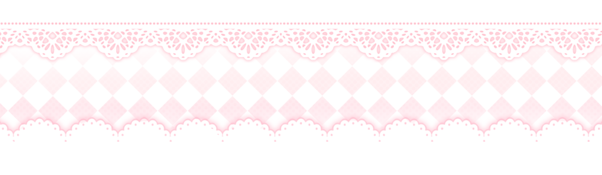
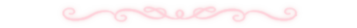
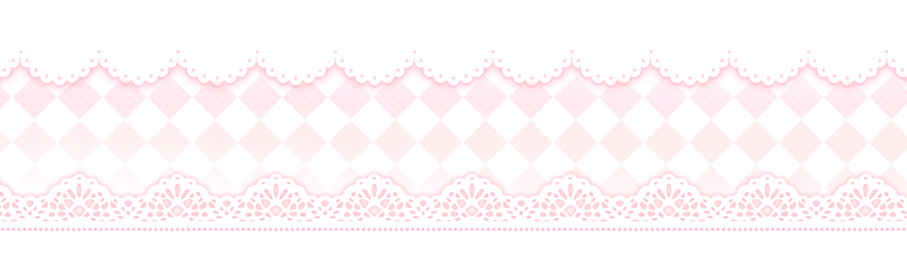

 “You don’t tell me to shut up, even if I talk too much” -Laufey
“You don’t tell me to shut up, even if I talk too much” -Laufey

Cumplir un año y tres meses juntos no es solo sumar días en un calendario; para mí es la confirmación más pura de que elegimos seguir tomándonos de la mano sin importar qué tan empinado se ponga el camino.
Durante mucho tiempo me costó entender la felicidad de los demás o creer del todo cuando alguien decía quererme. Sentía una distancia constante con el mundo y un miedo muy real a que mis propios bajones o mi malestar terminaran alejando a quien tuviera cerca. Pero desde el primer instante en que apareciste, rompiste cada uno de esos miedos. Contigo entendí lo que es sentirse verdaderamente amado, cuidado y valorado tal y como soy.
Cada mes que sumamos no es solo un festejo, es un refugio. Me enseñaste a bajar la guardia, a no temerle a la vulnerabilidad y a desear que conozcas hasta la última esquina de mi corazón. En mis días más grises eres la luz que lo acomoda todo; en los momentos de cansancio eres el abrazo donde puedo soltar las cargas y respirar tranquilo. Contigo aprendí la diferencia entre simplemente sobrevivir al día a día y empezar a vivir de verdad.
Soñar a tu lado se volvió mi parte favorita de la vida. Sueño con un futuro donde sigamos aprendiendo del otro, donde podamos equivocarnos, crecer como personas y sostenernos en cada etapa. No me imagino este viaje sin ti; quiero seguir luchando por lo nuestro, construir una vida entera juntos y compartir cada paso que nos espere. Gracias por ser mi paz, mi lugar seguro y la razón por la que siempre elijo mirar hacia adelante. Te amo con el alma.
